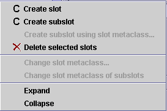

The Slot Menu
The Slot Menu

Whenever you have a slot selected in the Slot Form, you can access the cascading
slot menu
by clicking the right mouse button. This menu allows you to perform a number of
slot-related tasks.
To access the slot menu:
- Select a slot in the Slot Form.
- Click the right mouse button. The cascading slot menu is displayed.

- Make your selection and click the left mouse button.
The class menu allows you to perform the following tasks. Not all tasks are
available at all times; tasks that cannot be performed are greyed.
 Create
slot: Creates a new slot. This
operation is identical to clicking the Create
slot button. See Creating a
slot
for more information.
Create
slot: Creates a new slot. This
operation is identical to clicking the Create
slot button. See Creating a
slot
for more information.- Create
subslot: Creates a subslot subordinate to the highlighted slot. See
Creating a Subslot for more information.
- Create subslot using slot metaclass...: (Note that metaclasses are an
advanced feature; you should have a good understanding of Protégé before
you use metaclasses.) If you have added slot metaclasses to your project, allows
you to create a new subslot using a slot metaclass as a template.
 Delete
selected slots: Deletes the highlighted class and all of its subclasses,
removing it from the current project. This operation is identical to the Delete
class
button. See Deleting a Class for
more information.
Delete
selected slots: Deletes the highlighted class and all of its subclasses,
removing it from the current project. This operation is identical to the Delete
class
button. See Deleting a Class for
more information.- Change slot metaclass: (Note that metaclasses are an advanced feature;
you should have a good understanding of Protégé before you use metaclasses.)
Changes the slot metaclass of the highlighted slot. See Changing the Metaslot of a Slot
for more information.
- Change slot metaclass of subslots: (Note that metaclasses are an
advanced feature; you should have a good understanding of Protégé before
you use metaclasses.) Changes the metaslot of all subordinate slots to
the metaslot of the highlighted slot.
- Expand: Shows all slots subordinate to the highlighted slot. This
is a multi-level display operation that is more extensive than clicking the
 icon, which only shows the next level of direct subslots.
icon, which only shows the next level of direct subslots.
- Collapse: Hides all slots subordinate to the highlighted slot. This
is a multi-level display operation that is more extensive than clicking the
 icon to the left of the class.
icon to the left of the class.
Next: The Slot Form
Slots Table of Contents